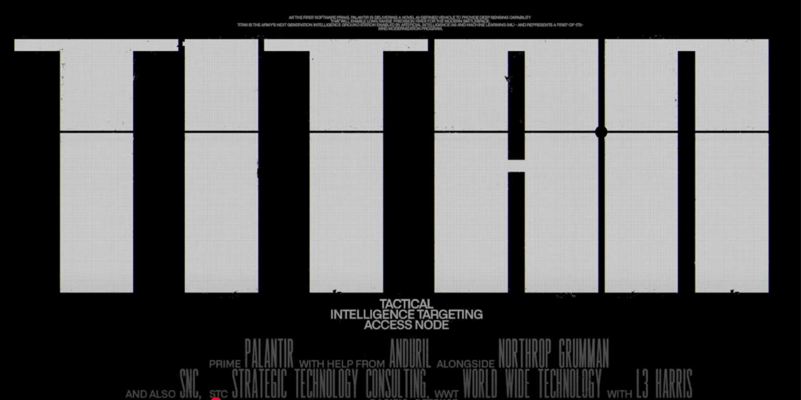
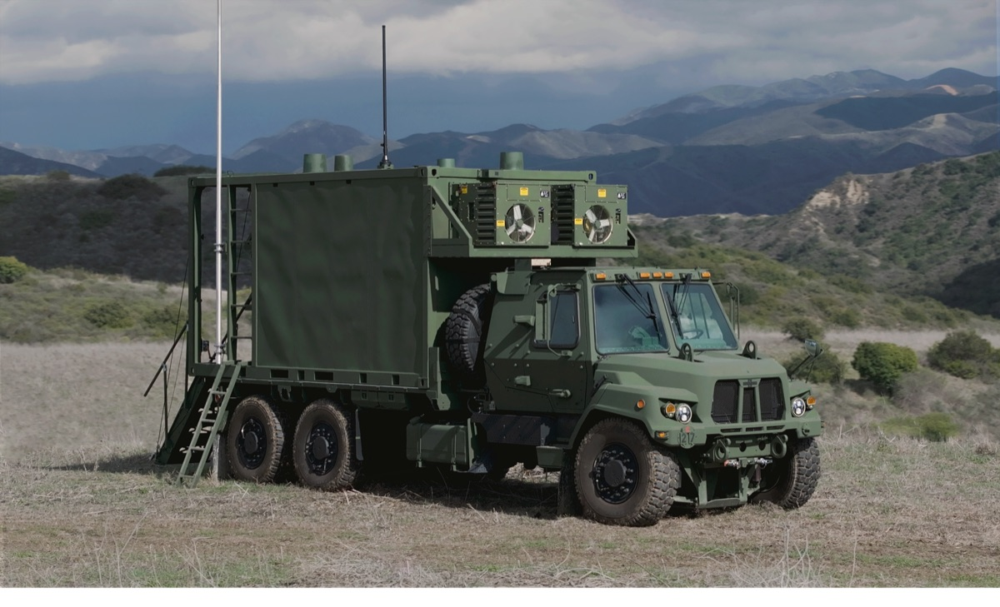
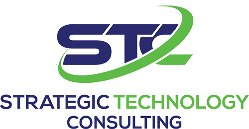
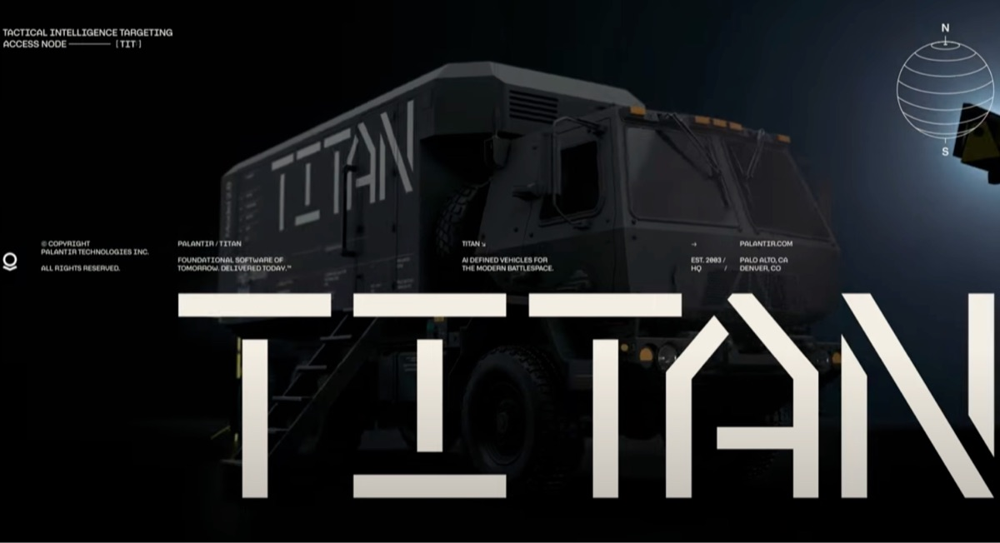

TITAN
部署美国陆军首辆AI定义的车辆。

播放视频
一个开创性的项目
TITAN旨在凭借尖端技术超越并机动压制对手。
作为首个软件主承包商，Palantir正在交付一种新颖的AI定义车辆，提供深度感知能力，为现代战场实现远程精确打击。
TITAN是陆军由人工智能（AI）和机器学习（ML）赋能的下一代情报地面站，代表着一个首创性的现代化项目。
认识我们的合作伙伴
基于二十年来为作战人员交付AI能力的经验，Palantir深知软件优先的价值。我们很荣幸能够将能够应对新兴威胁的领先AI和ML工具交到美国士兵手中。
Palantir TITAN团队汇聚了美国一些最强大的传统与非传统合作伙伴，包括Northrop Grumman、Anduril Industries、L3 Harris、Pacific Defense、SNC、Strategic Technology Consulting和World Wide Technology，共同致力于交付一流的解决方案。

NG
Anduril
L3
Pacific Defense
SNC

Strategic Technology Consulting
World Wide Technology
解决方案概览
TITAN提供灵活且可扩展的地面站，旨在以最新的深度感知和传感器融合能力实现美国陆军的现代化。
我们的解决方案集成了传感器、网络和自动化，以提高作战节奏，缩短从传感器到射手的时间。
我们的模块化开放软件汇聚来自多个领域的数据——并通过AI和ML技术加以丰富——为作战人员生成并交付具有决策质量的目标信息，同时减轻士兵的工作流程负担和认知负荷。

播放视频
在移动中进行采集与处理
大规模与现代传感器互操作
由尖端AI和ML赋能，并与陆军及联合火力系统集成
配备双环境控制单元（ECU）以提供冗余，提高效率并降低舱内噪音，为前线部队提供支持